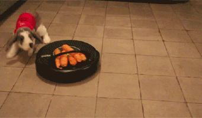

小兔纸VS定位神器

今日份难题：
扫地大侠如何保护胡萝卜不被小兔纸吃掉？
Emmm...
难不成他会未卜先知？？！
答案是NONONO
因为我们大侠有全方位平面定位系统
（小声：这也正是本次推送的主题）
Q：什么是全方位平面定位系统？
A：全方位平面定位系统是指在室内平坦环境下，我们的机器人能够时刻知道所处的位置，知道自己走了多远，让自己不迷路的技术。它只要用到单片机，陀螺仪和编码器就能够实现。

Q：单片机？陀螺仪？编码器？这是什么神仙组合？？！
A：上次推送我们介绍了编码器的用途，有了编码器我们就能知道机器人在某一个方向上走了多远，没错只是某一个方向上，当这个机器人被我们踹一脚后，他就彻底懵圈了。这时候我们就要请出我们的大哥，陀螺仪。陀螺仪最大的用处就是让我们的机器人知道它当前的朝向，我们可以通过iic通信协议读取一个轴的角速度，这个就是陀螺仪传输过来的原始值，我们把这个数值多次采样求平均值除去误差，再乘以每次读取数值的间隔时间再把他们累加起来，就得出我们当前的角度值。有了角度和距离，接下来就是融合的部分了，前方高能请注意。

Q：（瞪大眼睛.jpg）
A：设机器人已知的初始位置为A(x,y)，在控制系统一个计算周期△t时间内，机器人沿弧线从A(x,y)点走到A'(x',y')点。△x，△y，△θ分别表示在△t时间内机器人由A点走到A'点的横纵坐标和角度增加量；(x,y)是机器人坐标，θ则表示以横轴为起始位置并以逆时针方向为正方向的方向角；△S为A点到A'的弧长；R表示圆弧半径；于是△x，△y，可由如下公式计算得到：
△x=AA'*cos(θ+△θ/2),
△y=AA'*sin(θ+△θ/2)。

Q：（星星眼.jpg）
A：设last_angle为上次陀螺仪计算得到的机器人航向角，rob_angle为当前航向角，通过计算△t时间内机器人的位置变化△x，△y，进行累加，即可根据以下公式求出机器人在整个赛场上的位置。
x'=x+delta_len*cos(θ+△θ/2)=x+delta_len*cos[(last_angle+rob_angle)/2],
y'=y+delta_len*sin(θ+△θ/2)=y+delta_len*sin[(last_angle+rob_angle)/2]。
此次技术推文就此结束啦
有什么不懂或者想了解的都可以留言呦
下周同一时间见叭
技术支持：电控组
编辑：李亭熹